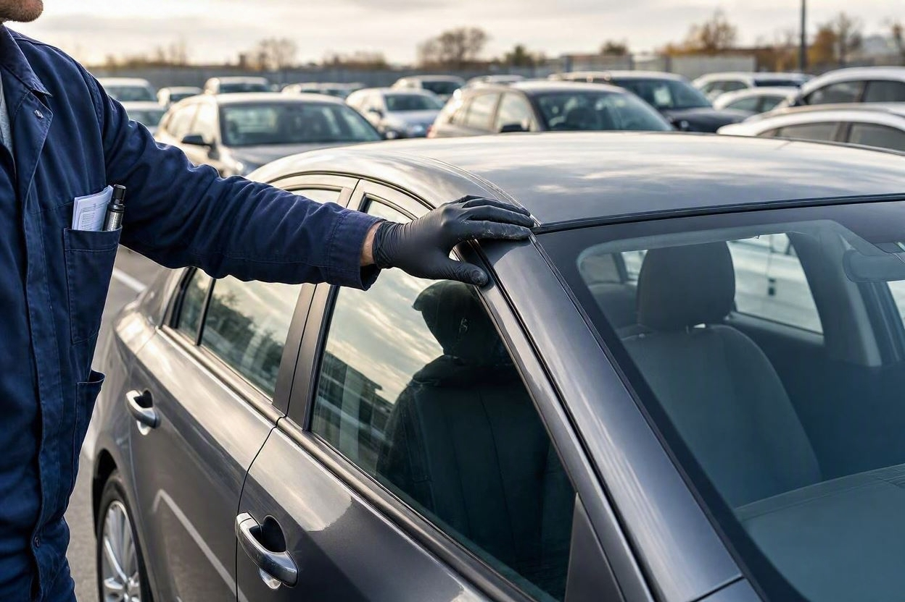
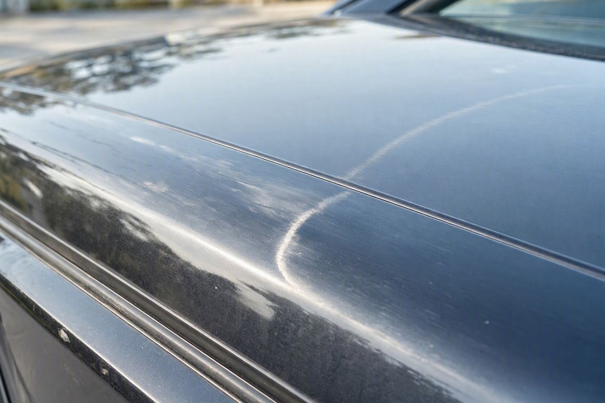
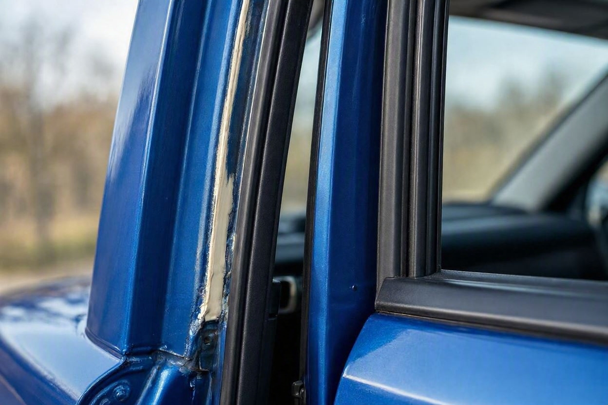
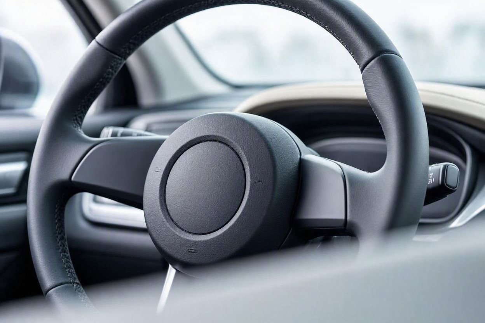

ماشین چپی را چطور تشخیص دهیم؟ نشانههای سقف، ستون، اتاق و ایربگ
خیلی از خریدارها سراغ رنگ درها و گلگیرها میروند، اما یک نکته مهم را از قلم میاندازند: خودرویی که چپ کرده است. ماشین چپی میتواند بعد از صافکاری و رنگ، کاملاً سالم بهنظر برسد، در حالی که مهمترین آثار آن در سقف، ستونها و داخل اتاق پنهان مانده است. همین نقطه است که تفاوت یک معامله مطمئن و یک ریسک جدی را میسازد.
برای تشخیص ماشین چپی، سراغ نقاطی بروید که در تصادف واژگونی آسیب میبینند: سقف برای فرورفتگی، موج و رنگشدگی، ستونها برای جوش و اصلاح، لبه درها و قاب سقف برای ناهماهنگی، و داخل اتاق برای تعویض آسترها و ایربگهای عملکرده. باز شدن ایربگ یا تعویض آن یک نشانه مهم است. تشخیص قطعی چپی نیازمند بررسی تخصصی سقف، ستون و شاسی است.
خلاصه در یک دقیقه
- سقف مهمترین نقطه بررسی است؛ موج، فرورفتگی یا رنگشدگی سقف نشانه جدی است.
- ستونهای A، B و C را برای جوش، اصلاح و ناهماهنگی رنگ بررسی کنید.
- ناهماهنگی لبه درها و قاب سقف میتواند نشانه کشیدگی بدنه باشد.
- ایربگ عملکرده یا تعویضشده یکی از مهمترین نشانههای تصادف شدید است.
- ماشین چپی معمولاً افت قیمت زیادی دارد و تشخیصش نیازمند بررسی تخصصی است.
ماشین چپی یعنی چه و چرا مهم است؟
ماشین چپی به خودرویی گفته میشود که در تصادف واژگون شده یا روی پهلو یا سقف افتاده است. برخلاف تصادف جلو یا عقب که آثارش بیشتر قابلدیدن است، چپ کردن به سقف، ستونها و اسکلت بالایی خودرو آسیب میزند؛ همان بخشهایی که در ایمنی سرنشین نقش کلیدی دارند.
پیش از تصمیمگیری خوب است بدانید مجموعههایی مثل کارماچک این نقاط را بهصورت تخصصی بررسی میکنند، چون سابقه چپ کردن مستقیم روی ایمنی و ارزش معامله اثر میگذارد.
نکته مهم اینجاست که یک ماشین چپیِ خوب صافکاریشده میتواند از بیرون بیعیب دیده شود. برای همین نباید فقط به ظاهر رنگ و بدنه اعتماد کرد و لازم است سراغ نشانههای اختصاصی واژگونی رفت.
نشانههای سقف
سقف اولین جایی است که در چپ کردن آسیب میبیند و مهمترین نقطه برای شروع بررسی است.

- موج، فرورفتگی یا برجستگی جزئی روی سطح سقف که در نور بهتر دیده میشود.
- رنگشدگی سقف در حالی که بقیه بدنه سالم است.
- ناهماهنگی درزها و لبههای اتصال سقف به ستونها.
- آثار چسب و آببندی تازه در محل اتصال سقف.
نشانههای ستونها
ستونهای خودرو، یعنی همان پایههایی که سقف را نگه میدارند، در چپ کردن فشار زیادی تحمل میکنند. اصلاح یا جوش این ستونها یک هشدار جدی است.

- آثار جوش تازه یا سنگکاری روی ستونهای A، B و C.
- ناهماهنگی رنگ ستونها با بقیه بدنه.
- لاستیکهای دور در و نوارهای آببندی تعویضشده یا نامرتب.
- پیچهای لولای در که خطافتاده یا باز و بسته شدهاند.
نشانههای داخل اتاق
داخل اتاق هم سرنخهای مهمی دارد، بهویژه سقف داخلی و آسترها.
- آسماننمای سقف داخلی که تعویض شده یا لکه و چروک نامتعارف دارد.
- پیچها و قابهای داخلی سقف که آثار باز و بسته شدن دارند.
- ناهماهنگی رنگ یا جنس قطعات داخلی نزدیک ستونها.
- بوی رنگ یا صافکاری تازه در قسمت بالایی اتاق.
نشانههای ایربگ
باز شدن ایربگ نشانه یک تصادف شدید است و در بسیاری از خودروهای چپکرده، ایربگها عمل کردهاند.

- درپوش ایربگ روی فرمان یا داشبورد که رنگ و جنسش با اطراف فرق دارد.
- درزها و اتصالات نامرتب که نشان میدهد ایربگ تعویض شده است.
- روشن ماندن چراغ هشدار ایربگ روی داشبورد.
- نبود ایربگ در جایی که خودرو باید مجهز به آن باشد.
روشن بودن چراغ ایربگ را میتوان با دیاگ هم بررسی کرد، اما اصلاح ظاهری درپوشها فقط با بررسی چشمی دقیق و بررسی کامل خودرو پیش از خرید مشخص میشود.
جدول نشانهها و اهمیت
| نقطه بررسی | نشانه | اهمیت |
|---|---|---|
| سقف | موج، فرورفتگی، رنگشدگی | بسیار مهم |
| ستونها | جوش، اصلاح، ناهماهنگی رنگ | بسیار مهم |
| قاب و لبه در | کشیدگی و ناهماهنگی درزها | مهم |
| آسماننمای سقف | تعویض یا لکه نامتعارف | متوسط تا مهم |
| ایربگ | باز شدن، تعویض، چراغ روشن | بسیار مهم |
پیش از معامله، احتمال چپ کردن را بررسی کنید
ماشین چپی معمولاً افت قیمت زیادی دارد و روی ایمنی اثر میگذارد. یک بررسی تخصصی میتواند سابقه واژگونی را روشن کند و ابهام معامله را کمتر کند.
شروع کارشناسی خودروبررسی عملی مرحلهبهمرحله
این مسیر ساده کمک میکند نشانههای اولیه چپ کردن را بدون ابزار خاص بسنجید:
- مرحله اول:خودرو را در نور روز ببرید و سقف را از زاویه کم برای موج و فرورفتگی بررسی کنید.
- مرحله دوم:ستونهای کنار درها را برای آثار جوش، اصلاح و ناهماهنگی رنگ نگاه کنید.
- مرحله سوم:درها را باز و بسته کنید و به هماهنگی لبهها و لاستیکهای آببندی دقت کنید.
- مرحله چهارم:داخل اتاق، آسماننمای سقف و درپوش ایربگ را از نظر تعویض و اصلاح بررسی کنید.
- مرحله پنجم:در صورت شک، خودرو را برای بررسی سقف و شاسی به کارشناس بسپارید.
کارماچک فقط ایراد بدنه را شناسایی نمیکند؛ اثر آن روی ایمنی و ارزش واقعی معامله را هم مشخص میکند. برای همین بررسی نشانههای چپ کردن در کنار وضعیت فنی معنای درست پیدا میکند.
چه زمانی حتماً سراغ کارشناس بروید؟
بعضی نشانهها را نباید نادیده گرفت. اگر موج سقف، جوش ستون یا آثار تعویض ایربگ دیدید، بررسی تخصصی ضروری است. همچنین اگر آسماننمای سقف تعویض شده یا چراغ ایربگ روشن میماند، بدون تأیید کارشناس تصمیم نگیرید.
چون ماشین چپی افت قیمت قابلتوجهی دارد، میتوانید تأثیر آن بر ارزش و قیمت خودرو را هم بسنجید تا در چانهزنی واقعبینانه عمل کنید.
جمعبندی
ماشین چپی یکی از موارد پرریسک در خرید خودروی دستدوم است، چون هم روی ایمنی و هم روی قیمت اثر جدی میگذارد. مهمترین نشانهها را باید در سقف، ستونها، اتاق و ایربگ جستوجو کرد، نه فقط رنگ درها و گلگیرها. با این حال هیچ نشانهای بهتنهایی قطعی نیست و تشخیص دقیق نیازمند بررسی تخصصی سقف و شاسی است. تصمیم درست وقتی گرفته میشود که این نشانهها کنار کارشناسی کامل دیده شوند.
مطمئنتر معامله کنید
اگر میخواهید پیش از خرید از سالم بودن اسکلت و سقف خودرو مطمئن شوید، میتوانید رزرو کارشناسی را ثبت کنید تا بررسی بدنه، سقف و شاسی با هم انجام شود.
ثبت درخواست کارشناسیسؤالات متداول
ماشین چپی با چه ماشینی فرق دارد؟
ماشین چپی خودرویی است که واژگون شده یا روی پهلو و سقف افتاده است. برخلاف تصادف معمولی جلو یا عقب، آسیب چپ کردن بیشتر به سقف، ستونها و اسکلت بالایی وارد میشود که در ایمنی سرنشین نقش کلیدی دارند و همین موضوع تشخیص و اهمیت آن را متفاوت میکند.
آیا ماشین چپی همیشه از ظاهر مشخص است؟
نه. یک ماشین چپی که خوب صافکاری و رنگ شده باشد، میتواند از بیرون کاملاً سالم دیده شود. برای همین باید سراغ نشانههای اختصاصی مثل موج سقف، جوش ستون و تعویض ایربگ رفت. تکیه صرف به ظاهر رنگ و بدنه برای تشخیص چپ کردن کافی نیست.
باز شدن ایربگ نشانه چپ کردن است؟
باز شدن ایربگ نشانه یک تصادف شدید است که میتواند شامل چپ کردن هم باشد، اما بهتنهایی بهمعنای واژگونی نیست. اگر ایربگ تعویض شده باشد و همزمان موج سقف یا جوش ستون هم دیده شود، احتمال چپ کردن بیشتر میشود. بررسی مجموعه نشانهها مهم است.
چرا سقف مهمترین نقطه بررسی است؟
چون در چپ کردن، بیشترین فشار به سقف و ستونها وارد میشود. سقف بخشی است که در واژگونی به زمین برخورد میکند و آثار موج، فرورفتگی و رنگشدگی روی آن باقی میماند. برای همین سقف اولین و مهمترین جایی است که باید در نور روز بهدقت بررسی شود.
ماشین چپی چقدر افت قیمت دارد؟
میزان افت به شدت آسیب و کیفیت تعمیر بستگی دارد و بدون بررسی نمیتوان رقم قطعی داد. اما بهطور کلی سابقه چپ کردن یکی از مواردی است که افت قیمت قابلتوجهی ایجاد میکند، چون هم ایمنی و هم اطمینان خریدار بعدی را تحت تأثیر قرار میدهد.